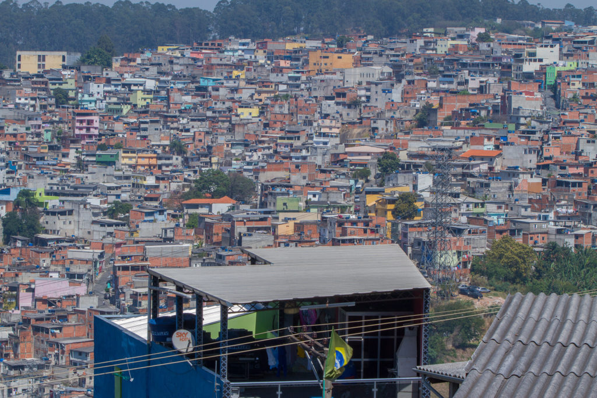

Home
História
Localidade
Informações
Informações
O Bairro da Brasilândia em São Paulo está situado nas seguintes coordenadas -23.466808, -46.691388
Brasilândia é um distrito do município de São Paulo. A população estimada em 2010 é de 280.069 habitantes, sendo o 4º distrito mais populoso do município e o primeiro da zona norte. O distrito é dividido em 41 bairros e alguns conjuntos habitacionais, são eles: Brasilândia, Jardim Maracanã; Parque Hollywood; Parque Itaberaba; Jardim Magali; Jardim Elísio; Jardim Alvorada; Jardim Almanara; Vila Elias Nigri; Jardim Irene; Vila Rica; Vila Penteado; Parque Pedroso; Vila Souza; Jardim Ondina; Jardim Ana Maria; Vila Ismênia; Parque Belém; Jardim Elisa Maria; Parque Tietê; Jardim Ladeira Rosa; Vila Terezinha; Vila Dulcina; Vila Isabel; Vila Áurea; Vila Nina; Jardim dos Guedes; Vila Serralheiro; Jardim do Tiro; Vila Itaberaba; Vila Icaraí; Vila São João Batista; Vila São Joaquim; Jardim Paulistano; Jardim Carombé; Jardim Guarani; Jardim Princesa; Jardim Damasceno; Jardim Paraná; Jardim Vista Alegre; Jardim Recanto; Jardim dos Francos; Além disso, a Serra da Cantareira ocupa grande parte do extremo norte do distrito. Seus limites são Cachoeirinha, Freguesia do Ó, Pirituba, Jaraguá e o município de Caieiras.
População

Além do bairro da Freguesia do Ó, o distrito é formado por pelo menos 64 outros bairros, possuindo uma população de classe média e média-alta, além de alguns bolsões de pobreza. Em 2008, cerca de 4,5% dos domicílios encontravam-se em regiões de favelas e uma população total de 407245 pessoas. 31,50 Km² de Área, uma densidade demográfica de 89,5 hab/ha e IDH de 0,850 - elevado (50°)